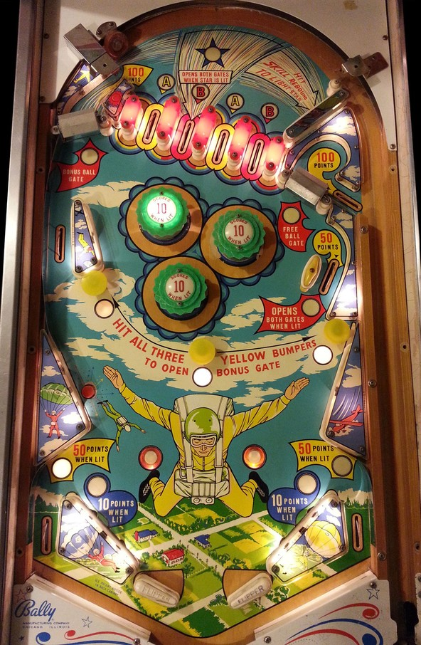

The four top lanes are labelled A-B-A-B. Whichever top lane you rollover through on ball 1 determines whether you are playing as the A or B skydiver on the backglass for the remainder of the game. Top lanes score 10 points. A skill shot consisting of bouncing off the wall switch to the right of the top lanes and into the second top lane from left opens both gates.
The Bonus Ball gate in the top left feeds back to the top lanes. The Free Ball gate in the upper right puts the ball back into the shooter lane for a replunge. Using either gate scores 100 points, closes the gate, and advances your selected skydiver one position downwards on the backglass. To open the gates, make the skill shot or the middle right side lane- or, for the Bonus Ball gate only, hit all three yellow mushroom bumpers, which score 10 points each and unlight when hit. Advancing your selected skydiver down to the ground scores a Special, which can be set to score 1 or 2 free games.
Pop bumpers and slingshots score 1 point, or 10 when lit. These features are lit intermittently based on switch hits. Like many mid-1960s Bally games, the frequency at which bumpers and slingshots light are pseudo-random, but they light less often as the machine gives out more free games, becoming more often again as full games are played without a replay being earned.
Rollover buttons near the slingshots score 1 point. Out lanes score 10, or 50 when lit; to light the out lanes, make all 4 top lanes in one game. There is no end of ball bonus or conventional extra ball feature. Tilt ends game. There is no center post, kickback, or out lane gate feature of any kind.
The below picture of Sky Divers' playfield was taken from the Internet Pinball Database, where it was originally provided by Jason Smith.
